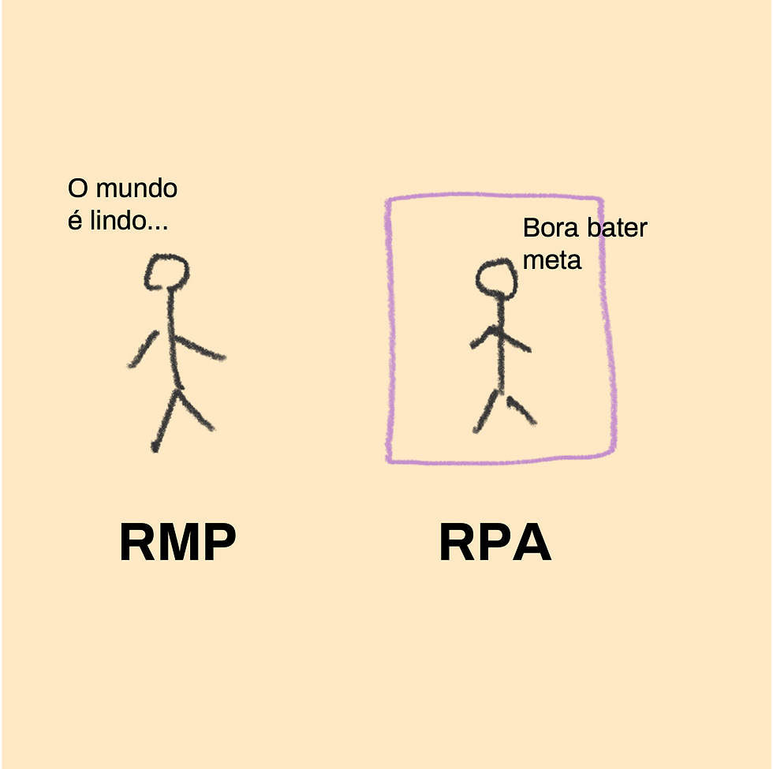
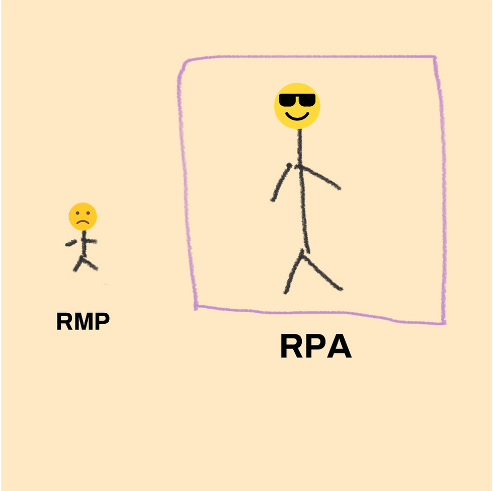
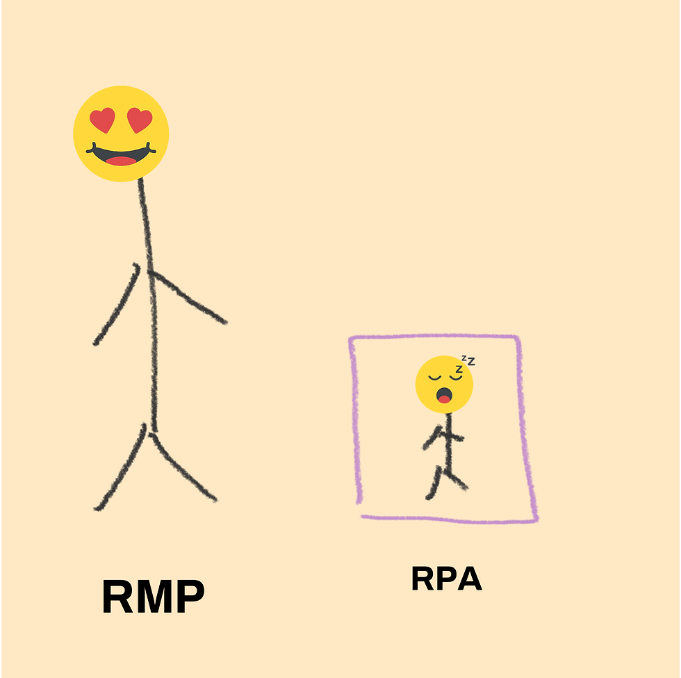
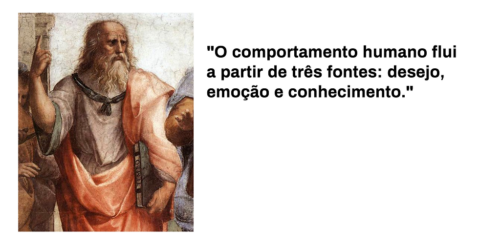
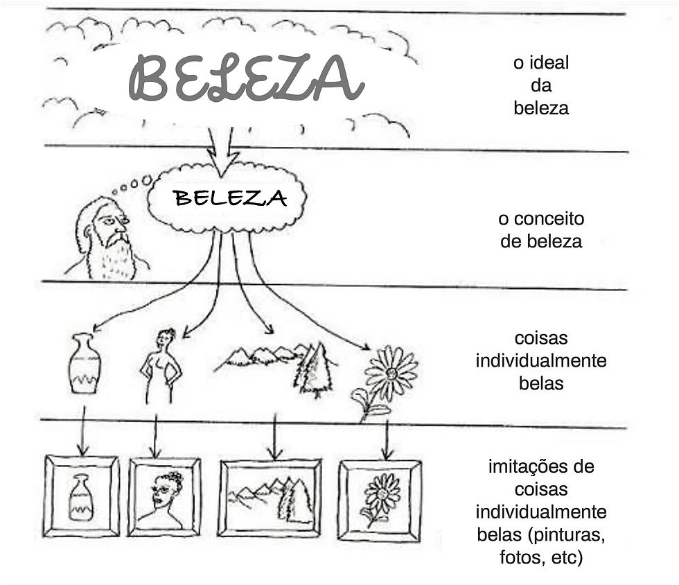
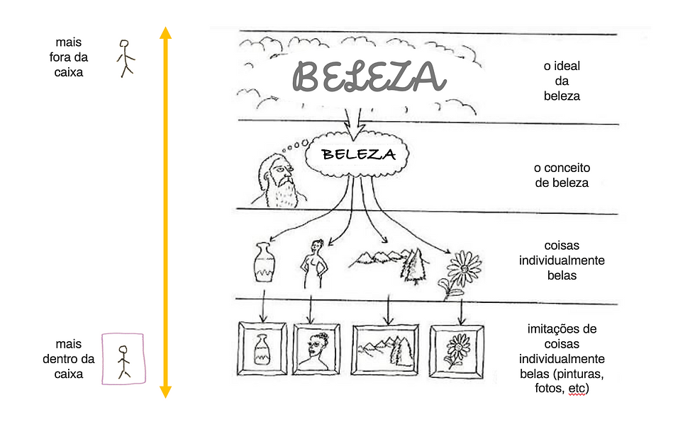

Como a neurociência e a filosofia me ensinaram a liderar melhor e desenvolver culturas
2022-04-27

Photo by Daniels Joffe on Unsplash
Recentemente, compartilhei alguns aprendizados que tive criando uma consultoria em cultura organizacional , mas senti que seria mais interessante destrinchar algumas daquelas frases. Essa é possivelmente a parte 1 dessa série de reflexões sobre cultura organizacional, liderança consciente e transformação organizacional.
"O recurso mais escasso não é petróleo, metais, ar puro, capital, mão de obra ou tecnologia. É a nossa vontade de ouvir uns aos outros e aprender uns com os outros e buscar a verdade em vez de procurar estar certo." - Donella Meadows
Desde pequeno, eu sempre me vi como um rebelde calado. Da rigidez da escola ao suposto pragmatismo das empresas, algo me incomodava. Mais do que isso, me incomodava também os falas sobre política que escutava o tempo inteiro ao meu redor. Políticos eram ídolos ou demônios e a política em si era vista como algo digno de desgosto e afastamento. Essa rebeldia quieta pode até ser notada pela forma como meus dedos estão nessa foto:

Anos depois, fui perceber que muito disso tinha a ver com as dinâmicas de poder, pouco claras e muito mal utilizadas. Isso fez com que, na universidade, eu me engajasse com o Movimento Empresa Júnior e, alguns anos depois, foi foi uma das motivações para empreender a Tribo , uma consultoria em cultura organizacional.
No começo, o trabalho era muito mais movido pela curiosidade do que pela experiência. Eu, Pedro e Dario tínhamos todos 25 anos de idade e muito interesse em fazer do mundo um lugar melhor por meio das empresas. Fazíamos projetos de diagnóstico cultural para empresas que percebiam uma desconexão entre os comportamentos observados nas pessoas e os desafios estratégicos. Eu me surpreendia com o quanto várias das lideranças que nos contratavam ficavam muito nervosas ou irritadas quando apresentávamos os resultados das pesquisas. Além de ser ruim ver as pessoas daquele jeito, isso também era ruim para o negócio porque fazia com que não quisessem continuar o trabalho com a gente.
Foi por causa disso que buscamos aprender mais como a mente humana funciona. Afinal, não parecia muito coerente a mesma pessoa que nos contratava para entender o que não estava legal ser a mesma que se incomodava com os resultados disso.
MENTE SÃ, CULTURA SÃ
E foi aí que conhecemos o Daniel Friedland. Médico e neurocientista pela Universidade da Califórnia, o Danny (como nós sempre o chamamos) escreveu um livro chamado Leading Well From Witihin , onde conecta neurociência e mindfulness para que, entendendo a mente e o cérebro, possamos liderarmos com mais consciência. Além de ter se tornado um mentor e um grande amigo, sua obra foi chave para que pudéssemos entender, finalmente, como superar o desafio das lideranças frustradas com a cultura e é, até hoje, um dos meus livros favoritos.

Fonte: Leading Well From Within (Daniel Friedland)
Aprendi que, considerando toda a complexidade do nosso cérebro, existem três regiões que influenciam diretamente a maneira como lideramos:
1) Cérebro Reptiliano : a parte mais instintiva e primitiva do nosso cérebro. Dentro do processo evolutivo, foi a parte que surgiu primeiro e que está preocupada com coisas como sobrevivência, busca por alimentos e reprodução.
2) Sistema Límbico : região responsável pelo processamento das nossas emoções e comportamentos. Quando nos vemos em situação de perigo, por exemplo, essa região é estimulada a nos colocar no modo "bater ou correr”.
3) Neocórtex : região mais "nova" no processo evolutivo, responsável por nossa cognição, linguagem e tomada de decisão. É a parte que usamos para exercitar a consciência e, por isso, também a parte utilizada na busca por significado, entendimento e transcendência.
Essa fundamentação é necessária aqui por alguns motivos:
A maneira como reagimos ao que acontece conosco nos leva a usar diferentes regiões do cérebro. Se vejo uma situação específica como uma ameaça, é natural que o cérebro reptiliano seja ativado, gerando estresse e me fazendo entrar em modo reativo, vendo como únicas alternativas a agressividade ("bater") ou a fuga ("correr").
Se encaro a mesma situação como um desafio ou uma oportunidade, o neocórtex entra em ação, o estresse é controlado e consigo ter mais consciência para lidar com a situação de forma criativa, sem precisar atacar ou me esconde.
Em ambos os casos, a decisão vai depender de como eu lido com as emoções ao meu redor. Se me submeto ao medo que esteja sentindo, possivelmente vou entrar no modo sobrevivência. Se aprendo a encontrar significado nas coisas que acontecem, fica mais fácil usar a consciência.
"Entre estímulo e resposta existe um espaço. Nesse espaço está nosso poder de escolher nossa resposta. Na nossa resposta está o nosso crescimento e a nossa liberdade." - Viktor Frankl
Meu ponto aqui é: hoje, sabemos que é possível ESCOLHER como queremos reagir a uma determinada situação. O problema é que a maioria de nós não foi educado para fazer escolhas.
Pense em um executivo padrão, aquele estereótipo que você já usou muito na hora de colocar fotos em apresentações .
Na escola, ele não podia escolher nada. Chegava lá e as disciplinas a serem estudadas já estavam decididas, sendo que o ritmo e o estilo de ensino para ele e para seus colegas seria o mesmo. Depois de anos no ensino fundamental e médio, um dia disseram para ele: " Parabéns! Agora você pode escolher uma faculdade para fazer ”. Como não havia sido educado para escolher, foi um processo doloroso.
Entrando na faculdade, achou que ali seria diferente, mas foi uma mera ilusão. Depois de ralar para se formar, o mundo disse: " Parabéns! Agora você tem um diploma e precisa escolher uma carreira ".
Acabou entrando numa empresa qualquer e descobriu que sua tarefa principal era obedecer ao que o chefe dizia. Depois de anos e anos obedecendo, um dia disseram: " Parabéns! Você obedeceu tão bem que agora você pode mandar ".
Ninguém nunca me ensinou a mandar nem a escolher, pensou ele. Ainda assim, tentou fazer o seu melhor para se conformar àquele ambiente. Tornou-se, portanto, um executivo, alguém que executa, que faz as coisas acontecerem. Lida bem com tarefas, razoavelmente com ideias e desastrosamente com emoções. E assim se cria um padrão que domina a maioria das empresas no mundo.
Você deve estar se perguntando aonde vamos chegar com isso. Para isso, vou precisar recorrer de novo à neurociência aqui. Agora, em vez de falar de pedaços do cérebro, vamos falar um pouco sobre como esses pedaços interagem por meio de sistemas neurais. Dois deles, relevantes aqui.
Um deles, muito importante, é a Rede Positiva à Tarefa (RPA) . Liderada principalmente pelo neocórtex, esse sistema é ativado quando temos algo para fazer . Quando me deparo com uma tarefa específica, ele vai buscar analisar informações e criar foco para que possamos realizar algo. Sabe quando alguém fala que precisamos ter ideias fora da caixa? A caixa, no caso, é esse sistema. Não por acaso, é o sistema que domina o dia a dia dos executivos.
O outro sistema é a Rede de Modo Padrão (RMP) . Utilizando várias regiões do cérebro, ela é o nosso estado mais natural, relaxado. É o sistema que nos permite abstrair, divagar, ter ideias e pensar em outras pessoas. É o famoso "pensar fora caixa" . É o sistema que nos permite desenvolver nossa autenticidade e criar coisas únicas, originais.
A descoberta recente é que esses dois sistemas possuem uma especificidade: eles não funcionam ao mesmo tempo . Para usar um, eu preciso repousar o outro. Então fica mais ou menos assim:

Culturalmente, existe uma força gravitacional que faz com que sejamos educados em direção à caixa. A suposta necessidade de produzir coisas e fazer a economia crescer torna as escolas (e, logo depois, as empresas) grandes treinadoras do RPA, grandes apoiadoras da caixa. Isso não é necessariamente ruim. Se não fosse a caixa, seríamos incapazes de criar todas as maravilhas que a humanidade foi capaz de produzir até hoje e não saberíamos o que é progresso. A caixa serve para colocarmos nossa curiosidade à prova e fazer acontecer.
O problema é não treinarmos a RMP. Sabe quando dizem que escolas matam a criatividade ? É exatamente por isso.

Também é normal ver algumas pessoas que se rebelam e vão fazer exatamente o oposto. Para elas, são dados adjetivos como improdutivas, procrastinadoras ou excessivamente idealistas.

Eu gosto de acreditar que em ambos os casos é possível ser feliz. Mas gosto mais ainda de exercitar os dois e descobrir quem somos quando somos seres humanos por inteiro.
Esse paradoxo, entre o pensar e o fazer, nos domina o tempo todo. É como se a nossa mente tivesse um interruptor descontrolado e nós acabamos preferindo travar em um modo só para não precisar questionar as coisas ao nosso redor.
DANÇANDO COM A CULTURA
Agora, podemos ligar alguns pontos. Lembra das lideranças que ficavam irritadas com as análises da cultura da empresa? Agora é possível entender a irritação delas. Para isso, um pouco de empatia vai ser útil.
Pense você liderando uma empresa sob a pressão das metas, dos investidores e dos clientes. Tudo o que você mais quer é que as coisas deem certo e isso também vale para a cultura. Você quer ver as pessoas trabalhando bem, alinhadas e produtivas. Você depende delas para isso e é muito frustrante quando elas não se comportam como você gostaria. Você se sente incapaz de liderar e de conduzir o time aos resultados. Ou, se consegue, o faz com um custo emocional muito grande. Você está completamente sequestrado pela caixa.
Essas lideranças, dominadas pelo instinto de sobrevivência (não que suas vidas estejam ameaçadas, mas sim seus status sociais e até mesmo financeiros) e pela RPA (a caixa) tornam-se, portanto, pessoas incapazes de olhar para fora, entender emoções e sentimentos e perceber que a cultura está em constante movimento. Porque as pessoas estão em constante movimento.
Para tornar essa tarefa ainda mais desafiadora, existe uma outra descoberta importante em relação ao nossos comportamentos. Quando temos nossas crenças questionadas, nosso cérebro é levado a crer que esse questionamento é uma ameaça direta à nossa sobrevivência , nos fazendo dar todo o poder ao cérebro reptiliano para resolver a situação. Foram incontáveis as vezes em que vi lideranças que sempre acreditaram no poder da padronização, da uniformidade e da baixa tolerância ao erro ficarem extremamente irritadas quando as análises indicavam que a empresa deveria ser mais flexível no estilo de trabalho ou mais aberta à tentativa e erro para criar novas soluções. O cérebro delas interpreta isso da mesma forma como se suas religiões estivessem sendo questionadas ou se alguém as tivesse tentando bater com um pé de cabra. Literalmente .
Talvez a essa altura você já esteja começando a perder a esperança, mas agora é que fica interessante. Porque a pergunta não é como convencemos essas lideranças que mudar é importante. A pergunta é como podemos promover diálogos para que as pessoas, incluindo as lideranças, entendam como podem se reorganizar, quando necessário, para se adaptar às mudanças. E, aqui, te convido, líder (e eu sei que você é) a fazer esse processo de dentro para fora.
Relembre nossos amigos RMP e RPA, fora e dentro da caixa, respectivamente. Eles são como o dia e a noite, como a inspiração e a expiração, como a sístole e a diástole. Movimentos opostos, mas que não vivem um sem o outro.
Quando temos conflitos internos, paradoxos ou dilemas que nos incomodam, é normal buscarmos conforto na ideia de que é possível uma solução, uma resposta correta frente a uma errada. Porém, isso normalmente nos leva a uma frustração e à sensação de que um pedaço importante nosso foi oprimido por outro mais importante. Não precisa ser assim. Em vez de procurar uma alternativa sobre a outra, podemos fazer com que elas interajam com mais harmonia. Em outras palavras, a vida não é um problema para ser resolvido, é uma música para ser dançada .

Quando isso acontece, sabemos que nossas ideias e até mesmo algumas crenças podem ser transformadas de acordo com o que aprendemos e com o contexto de cada situação. Da mesma forma que deixamos de acreditar que a terra era redonda após as primeiras pessoas a virem de fora, também somos capazes de perceber que a maneira como as empresas se organizam também precisam mudar quando deparadas com uma nova visão de mundo.
TRANSFORMANDO FILOSOFIA EM LIDERANÇA
Ao aprendermos a lidar com a constante ambiguidade, desenvolvemos uma habilidade muito relevante para qualquer liderança: a facilitação . Ajudar pessoas e grupos a criar uma visão e ações compartilhadas é fruto de quem lida bem com esse entra e sai da caixa e é capaz de influenciar outras pessoas positivamente para também conseguir isso. Não à toa, essa habilidade é tão citada quando se falar sobre o futuro do trabalho . Felizmente, nós tínhamos considerável experiência prévia com facilitação, o que acabou se tornando útil para praticamente todos os projetos os de transformação cultural que fizemos.
Para ilustrar como isso funciona, vou convidar o Platão. Tem uma frase atribuída a ele que se encaixa bem com o assunto aqui:

Você consegue ver a relação entre as três fontes e as três regiões do cérebro que exploramos no início?
Ele não é um dos maiores filósofos da história por acaso. Sua obra é altamente aplicável e útil para diversas questões da vida e da sociedade e isso vale também para a cultura organizacional. Um de seus conjuntos de conceitos filosóficos é a Teoria das Formas. Para facilitar, pense num cachorro.
Talvez você tenha imaginado algo assim:
Outras pessoas podem ter imaginado um outro cachorro:

E outras pessoas podem até ter imaginado um desenho de um cachorro:

Ainda assim, se você olhar para as três imagens, todas vão te levar a concluir que você está olhando para cachorros. Então, afinal, como se descreve um cachorro? Poderia ser algo do tipo:
Possui 4 patas
Tem rabo
Peludo
Relativamente menor que uma pessoa
Isso não funciona muito, por motivos de:
Foi aí que o Platão entendeu que para tudo na vida existe um ideal, como se fosse a verdade absoluta de algo, mas que não é possível descrever com perfeição. Para isso, trazer o ideal para a realidade por meio de um conceito, uma individualização e imitações. Imagine, por exemplo, a palavra "beleza".

Diferentemente do substantivo cachorro, que é concreto, o substantivo beleza é abstrato. Isso faz com que, por mais que existe um ideal de beleza, cada pessoa pode ver beleza como coisas diferentes e manifestá-la de formas diferentes. Imagine, agora, se, em vez de falar de beleza, nós começarmos a aplicar isso a típicos valores organizacionais, tais como " inovação ", " comprometimento ", " excelência " ou " humanização ". Se cada pessoa interpreta cada valor de uma forma diferente, o caos reina.
Quando isso acontece, temos o que chamamos de Cultura de Baixo Contexto (CBC) . Quando as pessoas tem entendimentos muitos diferentes das mesmas palavras é sinal de que a organização está fragilizada pela incapacidade de comunicação e alinhamento entre as pessoas. Já numa Cultura de Alto Contexto (CAC) , são necessárias poucas palavras para se gerar muito entendimento. Por isso, é tarefa constante das lideranças afinar a comunicação. Por mais que isso possa ser feito de várias formas, a capacidade de dialogar é chave nesse processo e pode começar ao entender que o contexto varia de acordo com a maneira como abordamos a situação. Ao convocar de novo nossos amigos fora (RMP) e dentro da caixa (RPA), conseguimos perceber que esses dois sistemas da mente se aplicam na teoria de Platão:

Isso nos mostra que os desafios de desenvolvimento da cultura podem ser dar em diferentes níveis e exigir diferentes abordagens:
1. Desafio de ideal : quando as pessoas estão pouco inspiradas ou desconectadas de si mesmas ou da organização, é momento de trazer exercícios de presença e/ou contemplação.
Um retiro com a equipe ou lideranças, por exemplo, pode cair muito bem. Levar as pessoas para um espaço fora do trabalho e sem grandes obrigações com prazos ajuda a sair da caixa
Uma palestra provocativa para trazer algum desconforto positivo, desde que bem feita. Em vez de procurar por palestras motivacionais, busque trazer pessoas que, de alguma forma, sejam capazes de inspirar o grupo ou fazê-lo refletir sobre algo.
2. Desafio de conceito : quando não há entendimento compartilhado em relação aos valores ou princípios da empresa, um diálogo franco e aberto sobre como cada pessoa vê a situação se torna imperativo para garantir que haverá entendimento sem necessariamente haver conflitos improdutivos. Sucesso aqui é as pessoas conseguirem olhar para uma palavra e dar a mesma explicação.
Uma conversa facilitada onde as pessoas consigam se sentir seguras para manifestar suas visões de mundo ajuda a, em seguida, criar convergência de entendimento.
As pessoas podem ser entrevistadas por uma liderança que seja capaz de fazer o mesmo processo de forma individual, oferecendo escuta para abrir esse campo de segurança psicológica.
Há dezenas de testes que podem servir de apoio. Você pode usar o Personal Values Assessment para uma devolutiva mais simples ou o Leadership Circle para uma abordagem mais ampla, isso só para citar alguns.
3. Desafio de materialização : quando as pessoas possuem entendimento compartilhado, mas dificuldade para desenvolver a cultura desejada , é importante perceber o quanto os artefatos culturais estão conseguindo traduzir isso. Entenda por artefatos culturais coisas como estrutura organizacional, dinâmica de reuniões, layout de escritório, vocabulário e até mesmo vestimenta. É tudo aqui faz com que as pessoas percebam a cultura.
Existem várias formas de listar e analisar os artefatos. O OS Canvas , por exemplo, pode ser útil para trazer consciência disso.
4. Desafio de replicação : quando a empresa cresce rápido ou quando há saídas e entradas de pessoas no time , é importante saber como a cultura pode ser positivamente imitada. Para isso, são necessárias restrições que, assim como a caixa, nos permite focar no que realmente importa. Para isso, o exercício aqui é eliminar aspectos que não representem a cultura desejada e garantam que as coisas corram da forma mais alinhada o possível.
Elaborar um Guia de Cultura pode ser uma ação efetiva para esse desafio. Apesar de ser um trabalho que requer algum nível de especialização, você pode se inspirar em alguns que ficaram famosos como, por exemplo, o do Netflix e do HubSpot .
Dentre os elementos de um bom Guia de Cultura, você pode escolher elaborar ao menos um Manifesto como esse da Johnson & Johnson ou uma lista de regras não-negociáveis como a da Brasil Júnior .
DO CONHECIMENTO À SABEDORIA
Saber que a cultura é construída em diversas camadas é útil principalmente para tornar a tarefa menos complexa. A vertigem que acontece atualmente no mundo do trabalho pode ser vista como pura confusão ou como uma tempestade que limpa o céu. O ponto aqui é que sabendo usar a consciência a nosso favor, o processo de evoluir uma cultura deixa de ser uma tarefa árdua e passa a ser um desafio que tão somente exige habilidades para as quais não fomos educados. Porém, há como revertemos isso aprendendo mais sobre nós mesmos, como pensamos, sentimos e fazemos as coisas. Afinal, a cultura organizacional é tão somente o produto dos nosso comportamentos e interações.
Em resumo:
Saiba como sua mente funciona. Ela pode ser sua maior aliada ou uma opositora ferrenha. Se vocês não estiverem se dando bem, busque por algum tipo de terapia. Se estiverem, também. Afinal, nunca se sabe.
Liderar muitas vezes é dançar com as suas próprias crenças. Ao enxergar a situação por outro ângulo, você abre espaço para que uma nova cultura possa nascer sem deixar para trás o que você valoriza.
Aprenda sobre facilitação. Ou contrate bons facilitadores, mas não abra mão dessa competência.
Lembra do Daniel Friedland, que eu citei lá em cima? No final de 2020 ele foi diagnosticado com um tumor no cérebro e sabia que isso encurtaria sua vida. Quando ele me ligou para dar a notícia, fiquei sem reação e tudo o que eu conseguia era fazer perguntas para ele. Ao final, perguntei, quase que já sabendo que a resposta seria nada, o que eu poderia fazer por ele naquele momento tão difícil. Como sempre, ele me surpreendeu quando disse "se você for capaz de demonstrar por si mesmo a compaixão que está demonstrando por mim, então saberei que cumpri minha missão com a nossa amizade".
Em outubro do ano passado, ele fez sua passagem. E, hoje, ao conseguir de alguma forma sintetizar o que aprendi com ele, lembro do privilégio que foi o ter como mentor e simplesmente passo isso adiante. Se você for capaz de causar em si a mesma evolução que você quer causar na cultura da sua empresa, então esse texto também terá cumprido sua missão.
❤